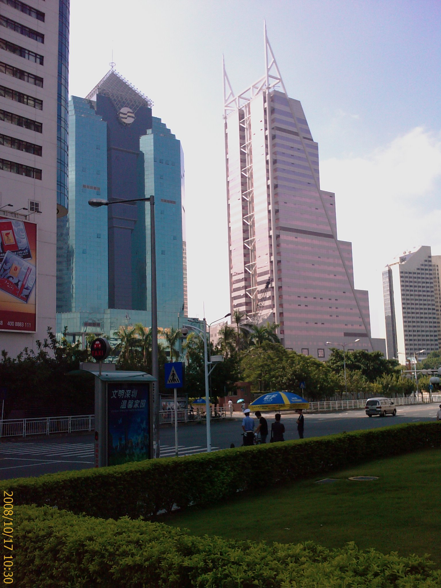

特別的日子
17/Oct 2008
今天是個蠻特別的日子
特別的不是日期
而是我遇到一些特殊的事情
- 早上為了要辦多簽，所以去公安局面談，本來以為會問一些有的沒的，
結果只問了你在 Foxconn 是在做什麼，你什麼時候來的？
結果一個上午就不見了….
只好留下幾張附近的照片當紀念。

- 下午想說要弄一個 String 的 class 來精簡我的程式碼
可能是我的能力不夠，弄了一個下午什麼都沒弄出來，
一個下午就不見了….
- 下班後搭車回宿舍，明天有個正妹同事要返台，想說約一起吃個晚餐，
結果成功了！之前有約過幾次都失敗，這次的成功真是可喜可賀！
正妹應該死會了，不過我也沒問，也不敢問…=.=
她要返台兩週，也就是說我有兩個星期不能跟她一起上班了，
早上沒有正妹可以看的日子….XD
- 吃完晚餐我就到附近的商圈逛逛，順便幫未來的室友打鑰匙，
打了三隻鑰匙，花了 11 塊，結果有一隻不能用，明天又要再跑一趟了，
不過重點是我在回宿舍的路上，在人來人往的街道，感覺背後的包包好像被什麼勾到了，
回頭一看，有個人的手在拉我的背包拉鍊，直覺就想到是扒手，我回頭看他一下，
他就欲蓋彌彰地停了下來，東張西望的，真是此地無銀三百兩，
瞪了他一下，反正我也沒有什麼損失，就不理他了。
生平第一次遇到扒手，還是很菜的扒手，先回去練個十年再出來混吧！
不過我的背包裡也沒什麼東西，就算整包被搶走了，
也頂多就是損失一隻小雨傘跟一本部門裡的書，
那個扒手真是不長眼….